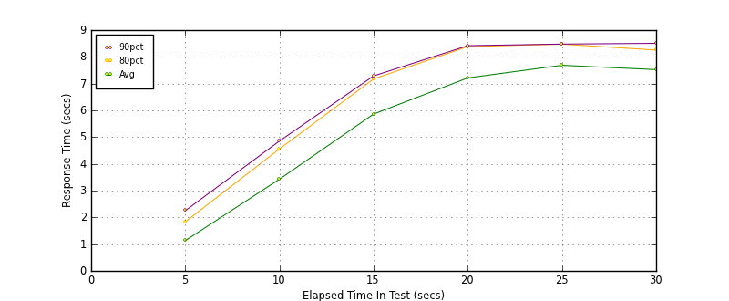
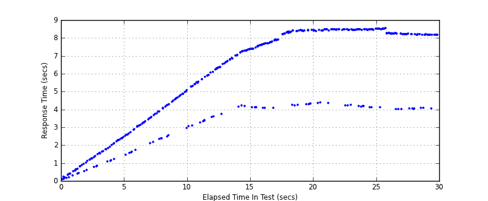
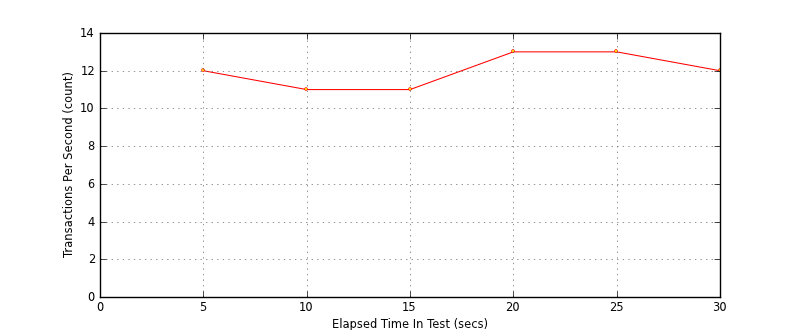
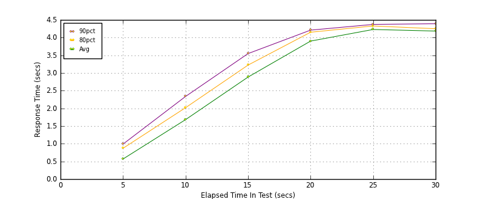
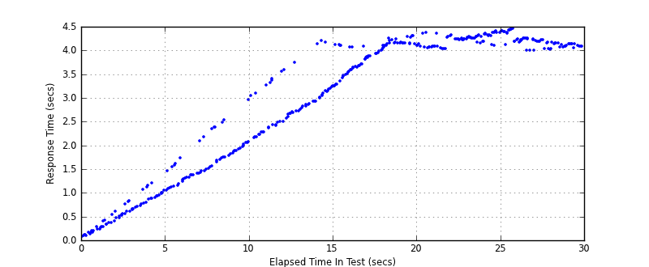
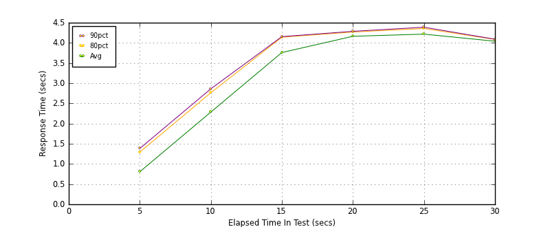
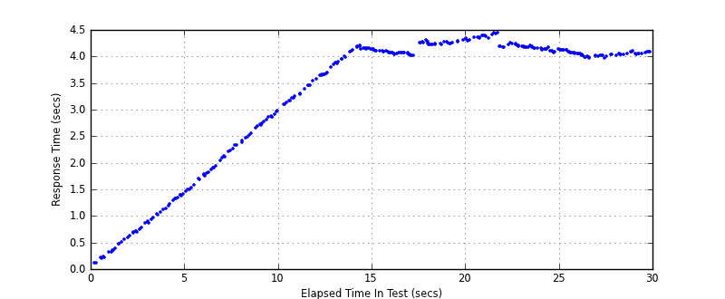
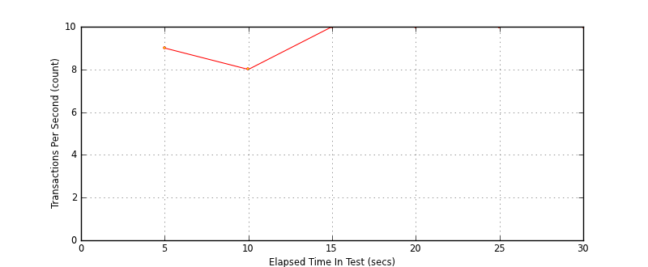

Performance Results Report
Summary
transactions: 477
errors: 0
run time: 30 secs
rampup: 10 secs
test start: 2014-01-16 15:01:15
test finish: 2014-01-16 15:01:45
time-series interval: 5 secs
workload configuration:
| group name | threads | script name |
|---|
| user_group-1 | 10 | read_user.py |
| user_group-2 | 90 | readwrite_user.py |
All Transactions
Transaction Response Summary (secs)
| count | min | avg | 80pct | 90pct | 95pct | max | stdev |
|---|
| 477 | 0.072 | 5.554 | 8.385 | 8.460 | 8.477 | 8.528 | 2.785 |
Interval Details (secs)
| interval | count | rate | min | avg | 80pct | 90pct | 95pct | max | stdev |
|---|
| 1 | 62 | 12.40 | 0.072 | 1.132 | 1.835 | 2.250 | 2.372 | 2.445 | 0.708 |
| 2 | 58 | 11.60 | 1.454 | 3.426 | 4.558 | 4.854 | 4.961 | 5.052 | 1.021 |
| 3 | 59 | 11.80 | 3.035 | 5.862 | 7.175 | 7.287 | 7.350 | 7.385 | 1.332 |
| 4 | 69 | 13.80 | 4.062 | 7.214 | 8.384 | 8.418 | 8.422 | 8.438 | 1.577 |
| 5 | 66 | 13.20 | 4.104 | 7.686 | 8.476 | 8.478 | 8.480 | 8.519 | 1.645 |
| 6 | 63 | 12.60 | 3.995 | 7.523 | 8.254 | 8.506 | 8.513 | 8.528 | 1.621 |
Graphs
Response Time: 5 sec time-series

Response Time: raw data (all points)

Throughput: 5 sec time-series

Custom Timer: get_tweets
Timer Summary (secs)
| count | min | avg | 80pct | 90pct | 95pct | max | stdev |
|---|
| 377 | 0.070 | 2.957 | 4.202 | 4.283 | 4.356 | 4.462 | 1.412 |
Interval Details (secs)
| interval | count | rate | min | avg | 80pct | 90pct | 95pct | max | stdev |
|---|
| 1 | 62 | 12.40 | 0.070 | 0.568 | 0.871 | 0.989 | 1.063 | 1.196 | 0.317 |
| 2 | 58 | 11.60 | 1.041 | 1.680 | 2.018 | 2.336 | 2.487 | 2.959 | 0.414 |
| 3 | 59 | 11.80 | 2.164 | 2.884 | 3.223 | 3.548 | 4.141 | 4.207 | 0.489 |
| 4 | 69 | 13.80 | 3.239 | 3.901 | 4.151 | 4.211 | 4.277 | 4.311 | 0.301 |
| 5 | 66 | 13.20 | 4.031 | 4.229 | 4.329 | 4.372 | 4.377 | 4.404 | 0.111 |
| 6 | 63 | 12.60 | 3.995 | 4.185 | 4.250 | 4.392 | 4.428 | 4.462 | 0.121 |
Graphs
Response Time: 5 sec time-series

Response Time: raw data (all points)

Throughput: 5 sec time-series
Custom Timer: post_tweet
Timer Summary (secs)
| count | min | avg | 80pct | 90pct | 95pct | max | stdev |
|---|
| 298 | 0.107 | 3.284 | 4.176 | 4.248 | 4.315 | 4.443 | 1.278 |
Interval Details (secs)
| interval | count | rate | min | avg | 80pct | 90pct | 95pct | max | stdev |
|---|
| 1 | 47 | 9.40 | 0.107 | 0.806 | 1.294 | 1.383 | 1.400 | 1.485 | 0.417 |
| 2 | 43 | 8.60 | 1.484 | 2.285 | 2.765 | 2.862 | 2.913 | 2.979 | 0.456 |
| 3 | 50 | 10.00 | 3.091 | 3.761 | 4.140 | 4.155 | 4.180 | 4.198 | 0.371 |
| 4 | 54 | 10.80 | 4.018 | 4.163 | 4.269 | 4.286 | 4.312 | 4.332 | 0.103 |
| 5 | 54 | 10.80 | 4.074 | 4.217 | 4.356 | 4.388 | 4.431 | 4.443 | 0.106 |
| 6 | 50 | 10.00 | 3.967 | 4.041 | 4.085 | 4.091 | 4.113 | 4.117 | 0.039 |
Graphs
Response Time: 5 sec time-series

Response Time: raw data (all points)

Throughput: 5 sec time-series
